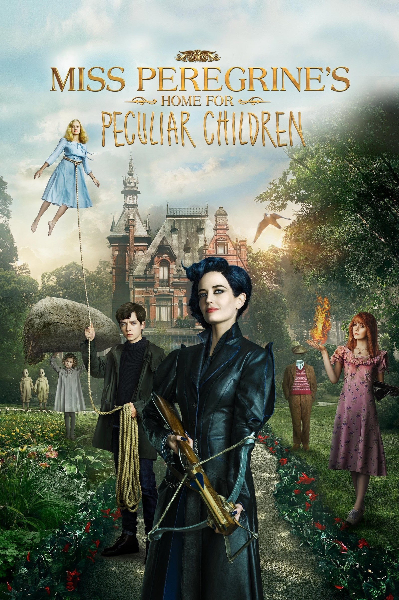

Synopsis When Jake discovers clues to a mystery that spans alternate realities and times, he uncovers a secret refuge known as Miss Peregrine's Home for Peculiar Children. As he learns about the residents and their unusual abilities, Jake realizes that safety is an illusion, and danger lurks in the form of powerful, hidden enemies. Jake must figure out who is real, who can be trusted, and who he really is.
Though it starts out unevenly, this fantasy soon finds its footing, taking viewers on a fascinating ride. Director Tim Burton doesn't pull any punches on the creep factor in Miss Peregrine's Home for Peculiar Children. He layers the visual storytelling with darkness and sadness. Those who aren't familiar with the Ransom Riggs book the movie is based on may not be aware of the ways the film is different, but Burton's version still has plenty for the book's fans to applaud. One of the gifts of a director like Burton is that he has the vision and imagination needed to create a world that only existed in writing before. In Miss Peregrine, Burton flexes his considerable muscles by building that world and plunging audiences right into the heart of it. As Jake, Butterfield does a great job portraying the earnestness, bravado, and confusion of a teenage boy. And the rest of the cast is also pretty strong, especially Samuel L. Jackson.
